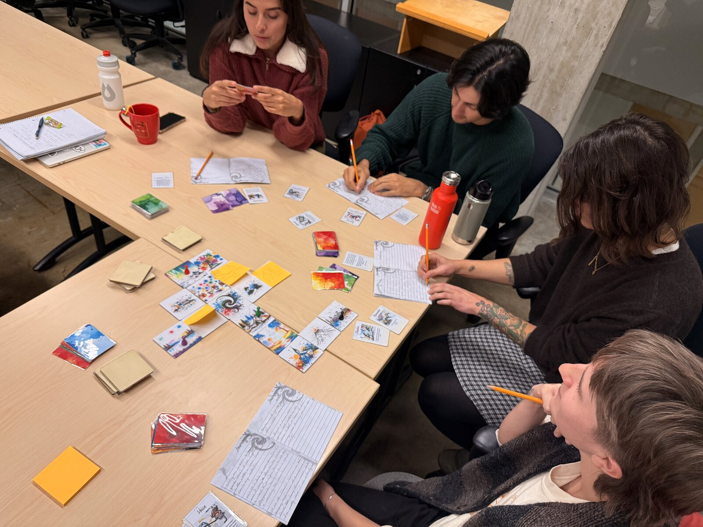
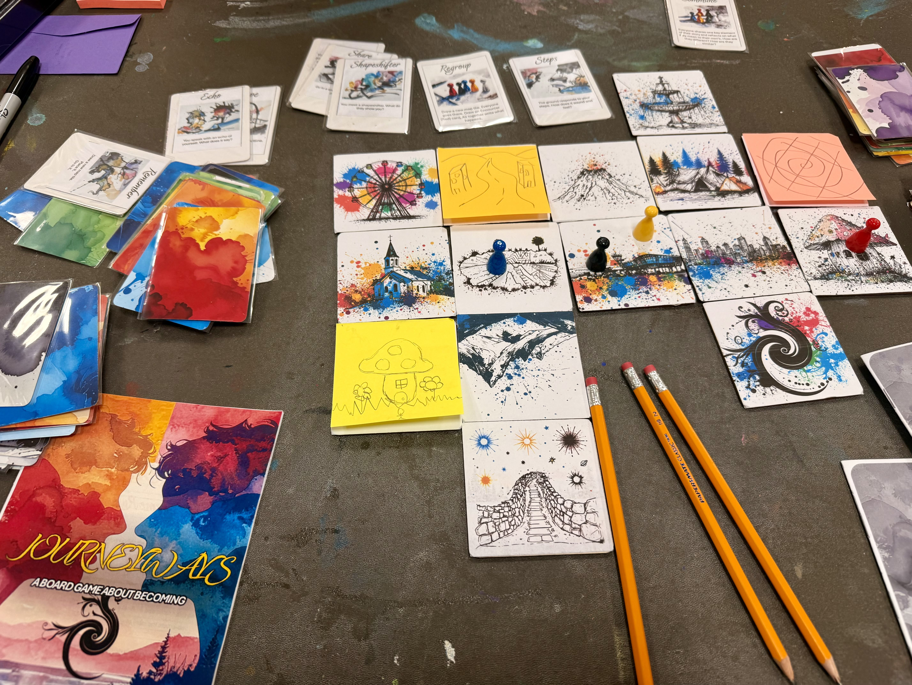

Introduction
JOURNEYWAYS is a board game and a digital game in development, used as research instruments at the UBC Institute for Gender, Race, Sexuality and Social Justice. However, the games are not the whole project; they are an integral tool to collect stories in a safe and collaborative environment, but the stories themselves are what matter the most, and the ethnographic analysis that will be performed on them.
The choices below are not aesthetic preferences. They are how the game tries to make space for an honest story. Each one is small. Together they describe what kind of object JOURNEYWAYS is, and what it is for.
"The stories are the most important. Not the way the players tell them." (Adri M.)
1. Identity is uncovered.

In JOURNEYWAYS, identity is anything the player decides it to be. As large or as small. As direct or as oblique. Based in real life or completely made up. Realistic. Fantastic. Anything.
The default content is built around gender identity, drawing on Judith Butler, Julia Serano, Susan Stryker, and Kit Heyam, but the game frame is open. Players have used it to talk about parenthood, about being an international student, about a younger self they were trying to remember. One player chose Water as their identity. Not a water-based entity, not anthropomorphized, simply Water. They were reflecting on feeling less flowy than they used to be, and wanted to think about it during their play experience.
"Identity is a very open concept in this game. It can be whatever the player decides it to be. As large or small, as direct or oblique." (Adri M.)
2. No winning, no losing.
"We are always arriving,
never arrived."
Countdown card.
JOURNEYWAYS has no win condition and no lose condition. By default, a session ends in one of three ways: a timer runs out, five Black cards have been drawn, or both. Or something else the players agree on. Or a player chooses to leave at any time, no questions, no penalty.
The Black cards are short poetic lines about time passing. Petals fall, and new buds bloom. A heartbeat skips into the silence beyond. Footsteps vanish in the sand. Each one is a small bell signaling another grain of time has passed.
The absence of winning is not whimsy. It is the architecture under which the game can hold a real story. There is nothing to optimize. There is no resolution to perform. There is just what the player chose to bring, for as long as they wanted to bring it.
3. The only rule the game enforces is consent at the table.


Everything in the game is mutable. Rules can be modified, bent, broken, ignored. New rules can be invented mid-session. The single non-mutable is that the rest of the table agrees.
Rule-breaking is not a failure mode. It is often the best thing that happens in a session. A player once decided not to place a tile adjacent to the existing map, against the rules. The tile was space-themed, so they invented warp mechanics on the fly to connect it. The break became a pivoting moment in the session, and inspired other players to be freer and more creative. Many player modifications get folded back into the canonical rulebook.
"Everything in the game is modifiable. New rules? Go ahead. Different rules? Go ahead. The only boundary is all other players must be ok with it." (Adri M.)
The looseness has a stated reason: agency. Players are given material to work with and trusted to do something with it. Most board games tell you what to do. JOURNEYWAYS tells you what is here, and asks what you want to do with it.
4. Designed to elicit, not to provide.


The cards are written as gestures, not situations. "This place reshapes your outline. How?" "Your voice changes in this place. How does it change?" "You no longer have to explain yourself. What changes?" Each is short and open. The player provides the specific.
Cards are sorted into colored piles, not one shuffled deck. Red is Encounters. Green is Movement. Blue is Reflections, drawn from a small canon of queer thought (Adrienne Rich, James Baldwin, bell hooks, Tammy Baldwin, Karl Heinrich Ulrichs, Margaret Cho, and others). Black is the passing of time. Purple is group actions. Players choose which pile to draw from. They know the kind of card they will get; but not exactly which one.
That is on purpose. Agency at the level of category. Discovery at the level of the card.
No card content is generated by AI. Every prompt and every quote was created by hand. In the digital version, animations are skeuomorphic, never theatrical. The restraint is part of the design.
5. A mirror in a cave is not a mirror in a classroom.


The board is a map. Players place tiles to build it as they go. Where you go on the map is itself an expression: which tile you walk toward, whether you go alone or join another player, whether you stay on the trail or strike out. Movement is not just for getting somewhere: it is part of telling.
Two components meeting is what generates a story. A card on its own gets repetitive quickly. Tiles on their own are too still. The mirror lands differently inside the Singing Cave than at the Study Room. A costume found at the Childhood House is not a costume found on the Star Bridge. The mechanic is the meeting.
"Finding a mirror in a classroom is very different than finding a mirror at the entrance of a dark cave." (Adri M.)
6. Expression in any modality. Even silence.

Each player has a booklet, there they create their character, draw it and convey their stories. They can use it to journal what happens to their character, write fragments, sketch, doodle, draw a comic, or leave it blank. The journal is the durable archive: what carries across sessions, what lets a player return to a character later or open a chapter two.
But the journal is the default, not the requirement. A player can narrate verbally instead. A player can draw rather than write. A player can pass a turn. A player can sit out a round in silence. None of this is a problem. Silence is not awkward in JOURNEYWAYS. It is one way of telling the story.
"Doing nothing is also a way of expression." (Adri M.)
The cards are not secret either. The text is short and simple, and any player can ask another for help reading or interpreting. The literacy load is shareable, not solitary.
7. Simple-yet-sensorial. The materials are yours too.

Cardboard or wooden tiles. Card stock that feels nice in the hands. A wordmark in a script that wants to feel playful and organic. Hand-drawn line illustrations on a white ground, with watercolor splotches behind them. The materials are deliberate.
So is the openness of the materials. Tiles can be drawn on. New tiles can be invented from sticky notes when a player needs a place that does not yet exist on the map. The components do not assume their own permanence. The game's looseness goes all the way down to the cardboard.
"You are placing a solid piece. You can do with it whatever you want. You can even draw on it and expand it." (Adri M.)
8. The framework is the form.

JOURNEYWAYS is held together by three components: the map tiles, the cards, and the player booklet. Together they make the game recognizable. The map gives location and context. The cards give stimulus and event. The booklet gives expression and archive.
Drop one and the experience changes. Anyone can do that. The framework is open: a researcher can author a variant for a specific community, a teacher can author one for a classroom, a parent can author one for younger players. The default content is adult and gender-focused, but the engine is for identity exploration in general.
The long-term form of JOURNEYWAYS is not a single product. It is the framework, and what other people make with it.
"The engine is meant to help in the creative process, not to be an obstacle." (Adri M.)
A note from the designer.
Identities and ways of expressing them have been part of the human experience for as long as there have been humans. The categories most institutions hand us are recent, narrow, and not built to fit. JOURNEYWAYS does not pretend to fix that. It opens a small space inside it, where someone can talk about themselves without having to compress what they are.
That is what every choice on this page is for.
"Knowledge needs to be shared with the people who need it the most." (Adri M.)
For project context and the researcher's bio, see About.